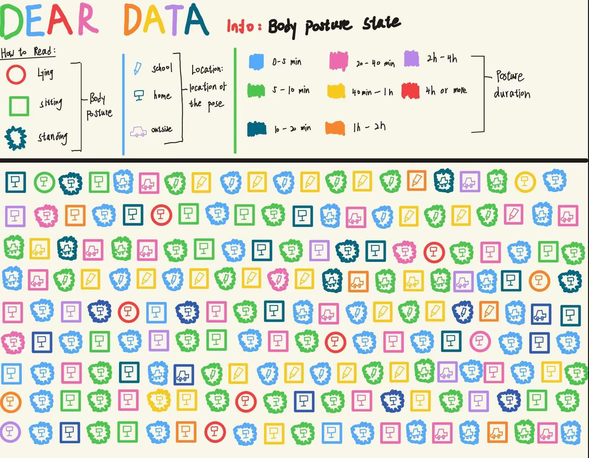
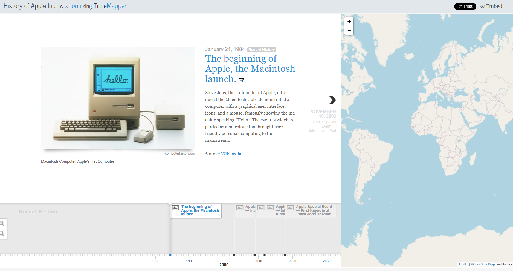
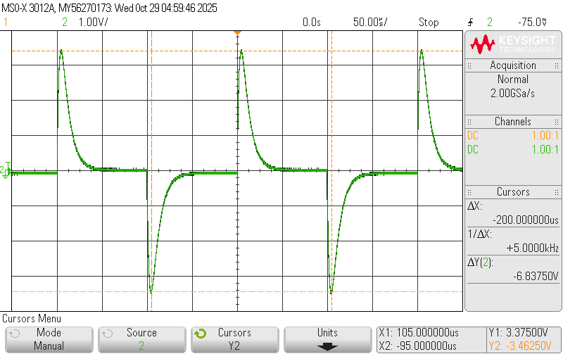
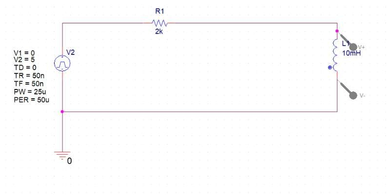
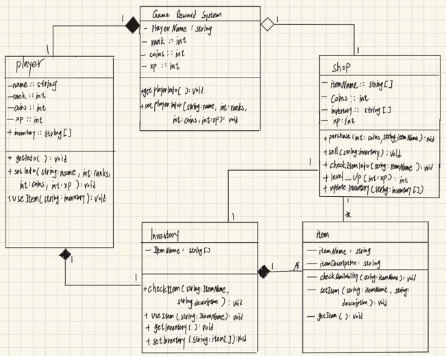
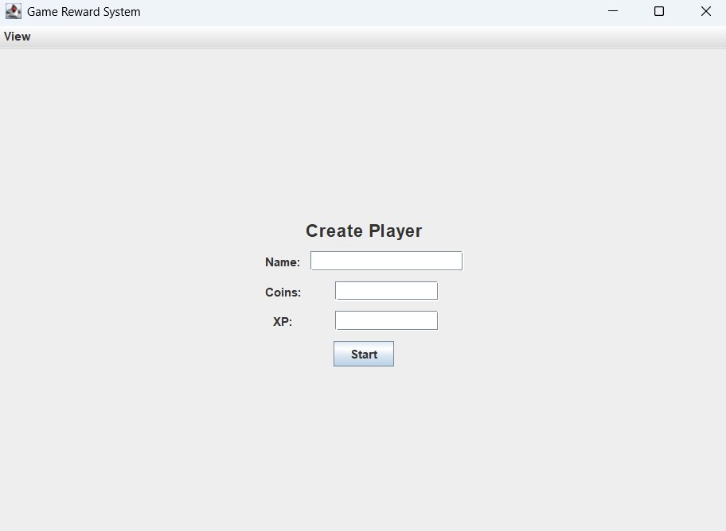

This project mainly documents things we do frequently in our daily lives without often noticing or intentionally recording them. My chosen theme is my body's primary postures (lying down, sitting, and standing) throughout the week.

This project primarily involves creating a timeline using a website and displaying the locations on a world map. My project focuses on the history of Apple Inc. See here for details
Circuit Design Project
For this project, I designed a circuit diagram and made it work using actual components. See details on Resume page

The Oscilloscope Screen Capture result for the project

The Circuit Simulation on Pspice for the project
Game Reward System
For this project, I helped to this system using java. See details on Resume page

The Class Diagram for the projectParts of the Java code

Player Interface of this system